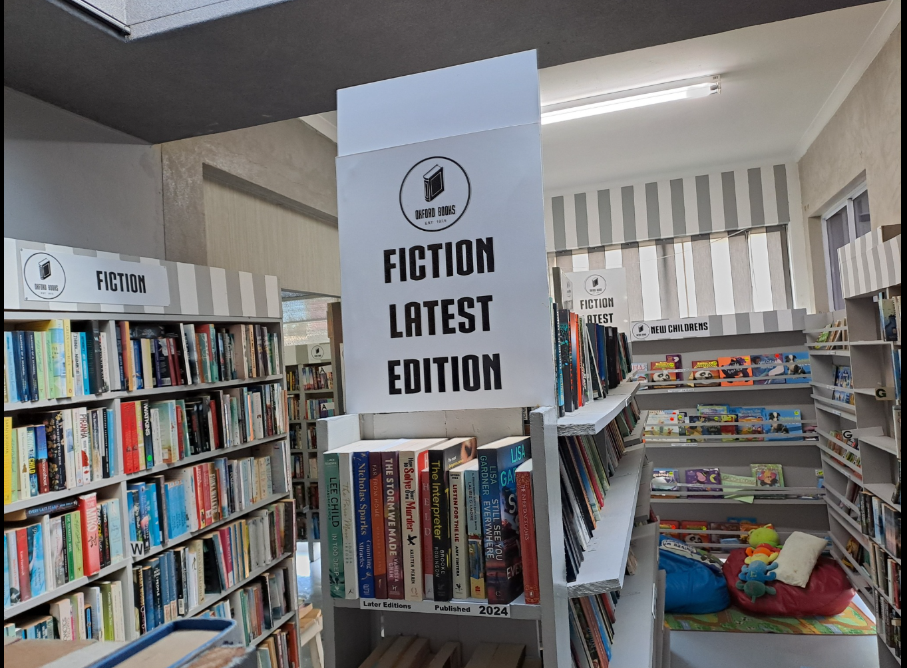

Our Team
Our friendly staff are passionate readers who enjoy helping customers find the perfect book.

Oxford Bookshop has been serving readers since 1990. Starting as a small family-owned bookstore, we have grown into a cozy community space where book lovers can explore new and unique reads.
We promote reading for all ages, provide access to affordable books, and encourage book exchanges. Our goal is to create a welcoming environment for everyone who loves literature.
Our friendly staff are passionate readers who enjoy helping customers find the perfect book.
Visit us at 17 Chamberlain Road, East London. We offer an in-store collection service so you can reserve your books and pick them up easily.
We emphasize promoting reading, offering affordable books, and facilitating book exchanges. Come visit our store and enjoy our in-store collection service!